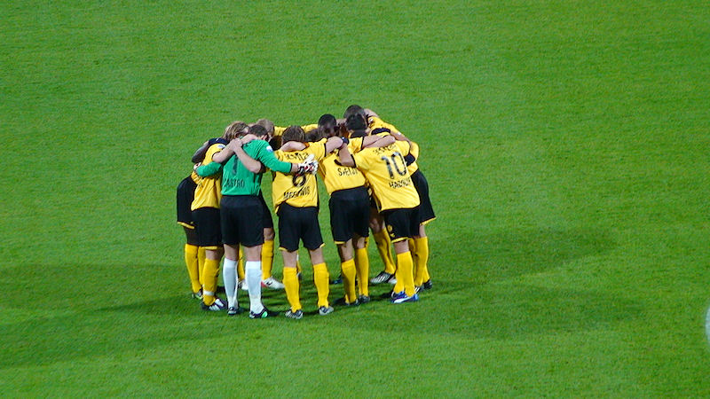
Na de goede wedstrijden tegen Heerenveen en PSV is het verwachtingspatroon
tegen AZ hoog.
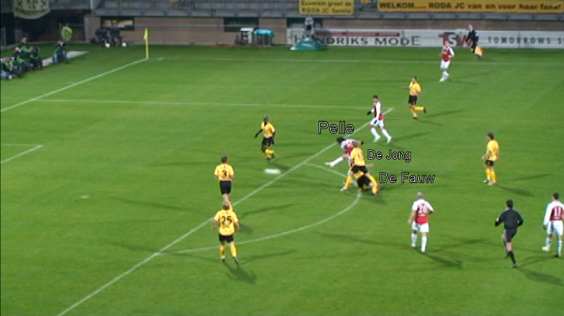
Pelle ontdoet zich van De Jong en De Fauw en haalt hard uit. Het schot gaat
net naast het doel.
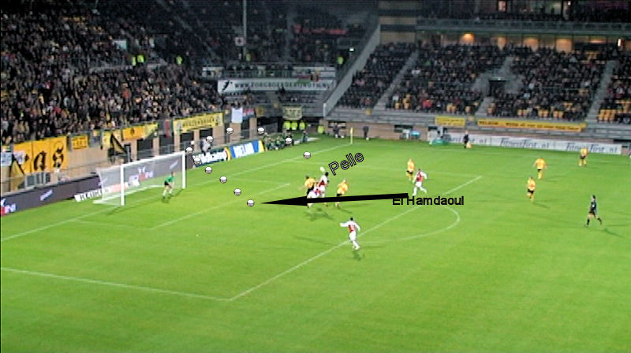
Pelle kopt op de lat waarna de bal terugkaatst. El Hamdaoui loopt
vliegensvlug in om de reboundgoal te scoren: 0-1, (35').
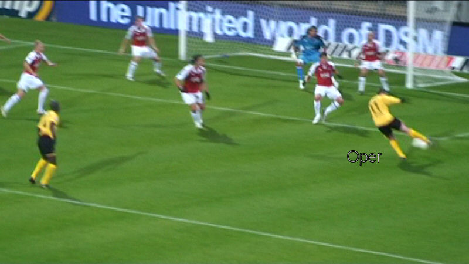
Volley van Oper wordt gekeerd door Romero.
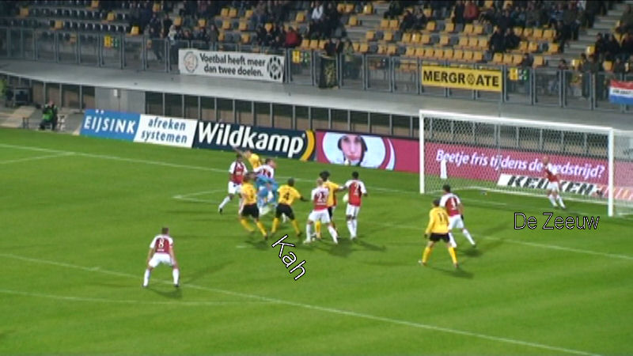
Kah kopt de bal op doel maar heeft de pech dat...
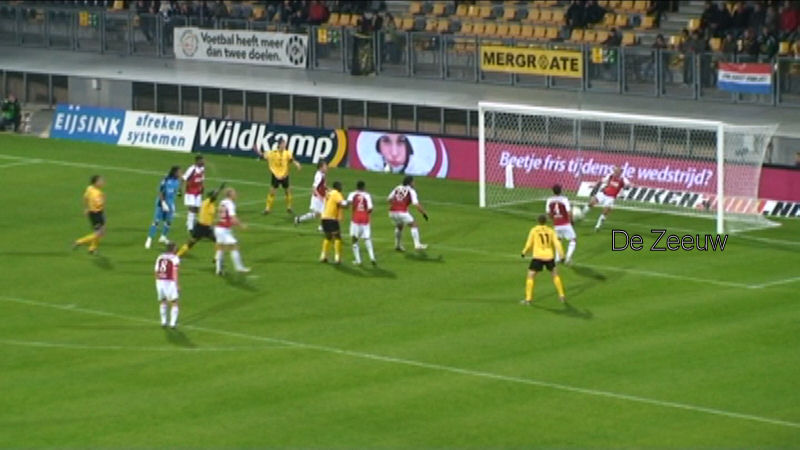
...De Zeeuw zijn doelman perfect assisteert door de bal van de doellijn te
schoppen.
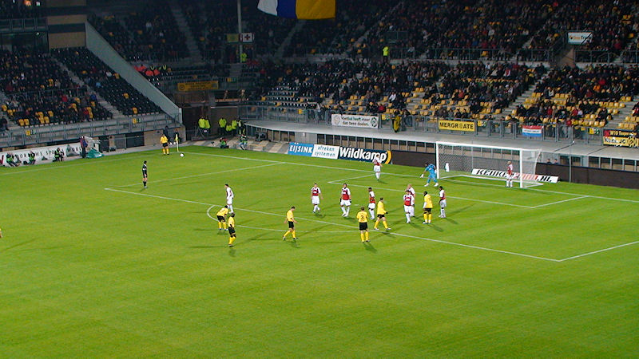
Roda was op het eind van de eerste helft dreigend met veel kansen, met name
uit hoekschoppen. Toch was AZ de beter georganiseerde
ploeg met meer individuele kwaliteit.
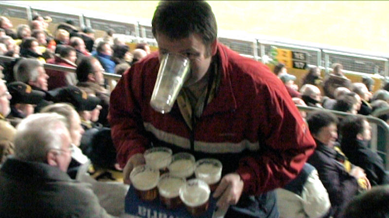
Beersjleeper P.
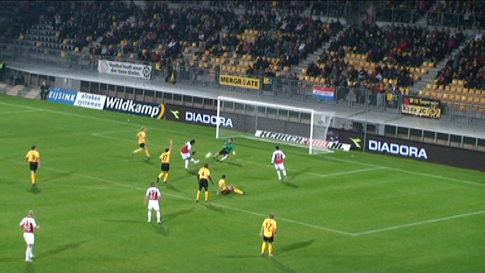
Pellè schiet in de 53e van dichtbij over Castro.
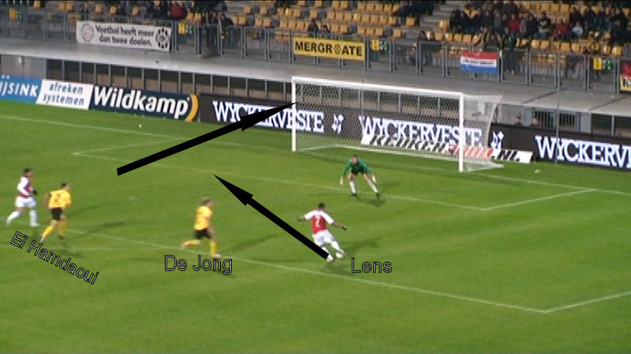
De Jong verspeelt de bal aan Lens die op de inkomende El Hamdaoui passt.
Deze kan eenvoudig links inschieten: 0-2, (89').
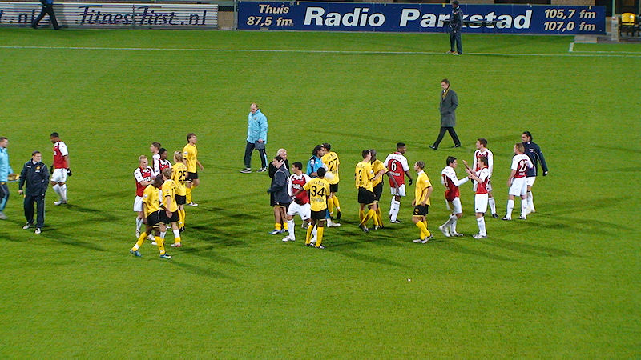
Na het inbrengen van Gommans, Matondo en Vandamme was de strijd definitief
gestreden. Deze wissels brachten hoegenaamd niks. De
nederlaag is echter puur toe te schrijven aan een tegenstander die op dit
moment meer klasse heeft dan Roda JC.
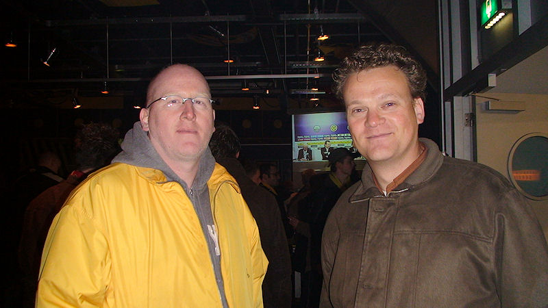
Voetbalfans uit Maastricht en Geleen. Daaaag FCL....!
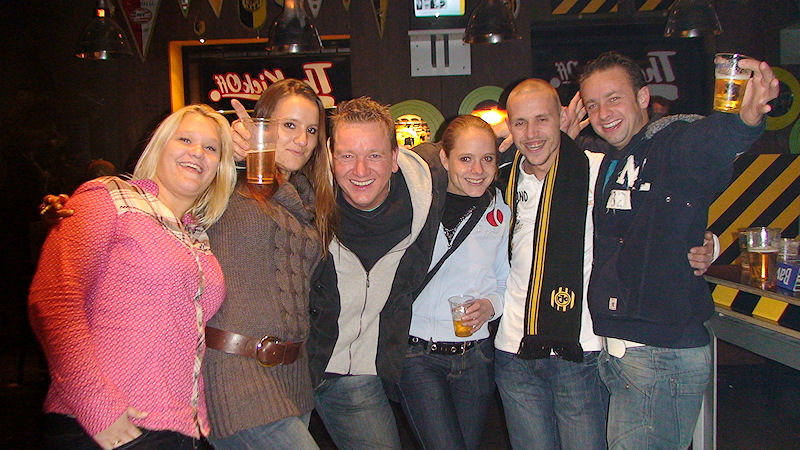
Enkele A-zetters met local heroes in de Kickoff waar vanavond geen spelers
verschenen.
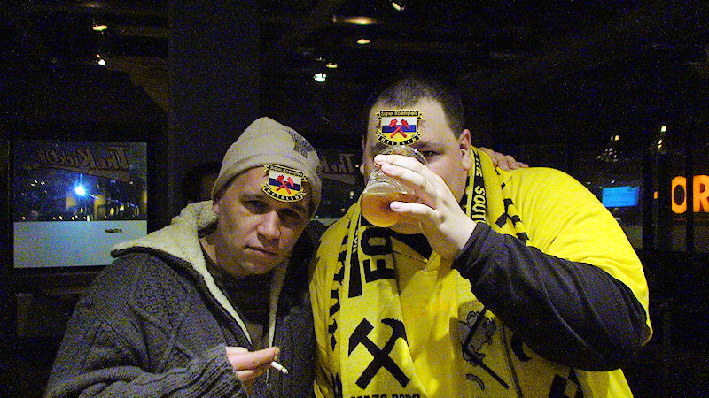
Ome Willem en Koffieboer tonen de nieuwe opnaai-emblemen met de tekst Super
Koempels Heerlen.